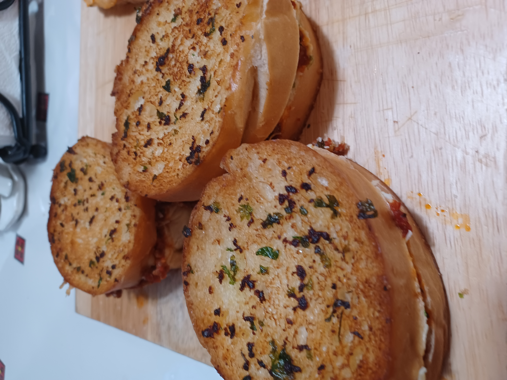
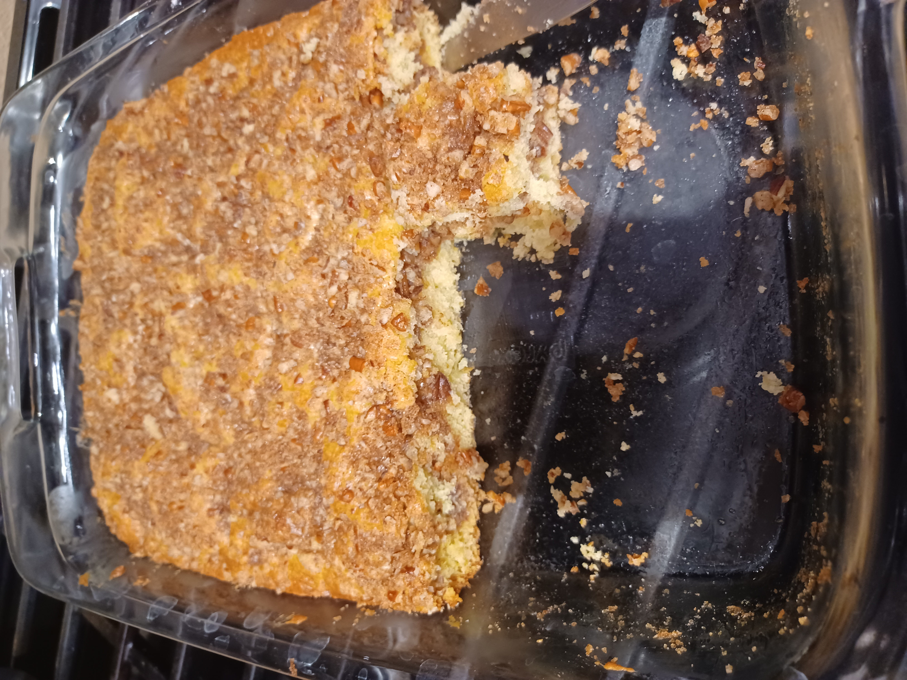
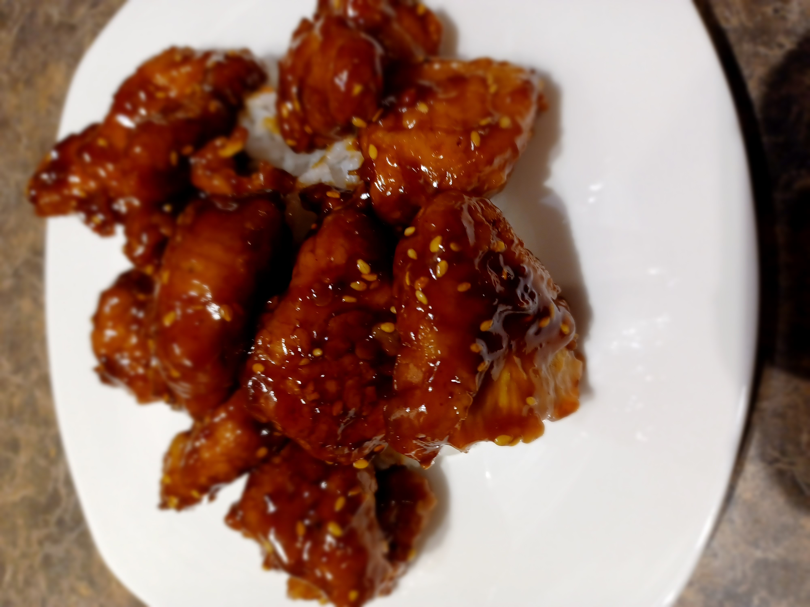
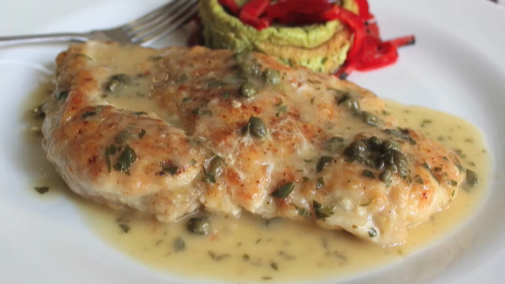
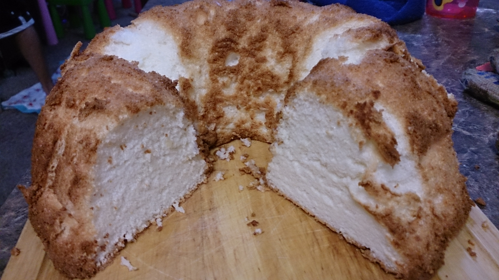

∙2 large eggs + 2 yolks ∙210g or 1c sugar ∙225g or 1c full fat sour cream∙150g or 5/8c buttermilk ∙3g or 3/4 tsp vanilla extract ∙50g or 1/4c neutral oil ∙50g or 3 1/2Tbsp butter (melted and cooled) ∙375g or 3c ap four (11.7% protein) ∙8g or 1.5tsp salt ∙12g 1 slightly rounded Tbsp baking powder∙4g or rounded 1/2tsp baking soda ∙280g or 1.5c fresh or frozen blueberries ∙lemon sugar (100g or 1/3c raw sugar + zest of 2 lemons, mixed)
Add sugar and eggs into a bowl and whisk to combine. To that, add sour cream, buttermilk, vanilla, oil, and butter. Whisk to combine. In a separate bowl measure flour, salt, baking powder, baking soda. Whisk to combine. Add wet ingredients to dry. Add blueberries and fold until just combined. Add muffin liners, if desired, then grease or spray, and fill each muffin hole (muffin hole?) with 225g or a rounded 1/2c muffin batter if using a jumbo 6-muffin pan or about 110g or 1/4c if using a standard 12-muffin pan. Top each muffin with a sprinkle of lemon sugar. Bake in preheated 350f/176c oven for 30-32min.

CHICKEN + MARINADE: 2lbs or 1 kilo boneless/skinless chicken thighs, 20g or 3 1/2 tsp salt, 10g or about 3 cloves minced garlic, 10g or about 2Tbsp minced ginger, 20g or 1 1/2 Tbsp lemon juice, 3g or 1tsp fenugreek (or garam masala if you can't find it), 10g or , 3 3/4 tsp kashmiri chili powder (or 3 to 1 paprika to cayenne if you can't find it), 200g or 3/4c greek yogurt.
SAUCE: 30g/3-4 glugs of olive oil, 150g or 1 medium onion (small diced), 50g or about 1 poblano (seeded and small diced), large pinch salt, 10g or about 2Tbsp minced ginger, 10g or about 3 cloves minced garlic, 5g or 2.5tsp garam masala, 5g or 2.5tsp turmeric, 5g or 2.5tsp cumin, 5g or 2.5tsp coriander, 5g or 2.5tsp kashmiri chili powder, 10g or 1 3/4tsp salt, 165g or 6oz tomato paste (1 small can), 425g or 1 3/4c water, 10g or 2 1/3tsp sugar, 210g or 1c heavy cream, 50g or 3Tbsp unsalted butter.
CHICKEN + MARINADE:
Combine chicken with ingredients above, rubbing marinade all over to cover chicken. Cover and refrigerate for 30min to marinate.
Preheat over to 450F/232C. Line sheet tray with foil and place chicken on tray. Load into oven and bake for about 15min. Align tray under oven broiler and broil on high until they're beginning to crisp around edges. Flip each piece of chicken to the back side and return to broil until side 2 is beginning to char and take on color. Allow to rest before cutting in to about 1.5" chunks.
SAUCE:
Preheat medium saucepan over med-high heat. Add oil, onion, poblano and salt. Stir and allow to soften for 6 min or so. Add ginger and garlic. Stir and allow to cook for about 60 more seconds. Add spices and allow to cook for 60-90 seconds until fragrant. Add tomato paste, stir, and allow to bloom for about a minute. Stir in water until paste dissolves into water and mix comes to a simmer. Cover, reduce heat to low and simmer for 20 min.
Once sauce has been cooking for 20min add in sugar and cream. Stir to combine. Add butter and stir to combine. Pulse with immersion blender until smooth.
Fold chopped chicken into the sauce.

2 eggs, 1 handful julienne cabbage, 1/2 handful julienne carrot, green onion, salt, pepper, cayenne, ham, cheese, thick white bread
Massage the seasoned veggies with your hand for 30 seconds to soften before mixing in the eggs with a fork. Grill buttered bread, cook the egg patty, top with sugar, and assemble with seared ham and cheese.

Calrose rice, seasoned rice vinegar, nori ribbons, bonito flakes, sesame seeds, bay scallops, shrimp, mayonnaise, Sriracha, soy sauce, sesame oil
Flavor fluffed rice with seasoned vinegar and seaweed, then spread into a baking dish. Toss seafood in spicy sriracha-mayo, layer it over the rice, and bake at 400°F/204°C for 20 minutes before a final broil.

12 oz thin spaghetti/linguine, 4 cups shredded chicken, 1 lb button mushrooms, onion, garlic, flour, butter, broth, half-and-half, mozzarella, parsley.
Boil pasta until al dente. Sauté the mushrooms and onions. Build a creamy roux-based white sauce in the pan, toss everything together, top with cheese, and bake at 350°F/176°C until bubbling.


For the crumb:
1/3 cup white sugar, 1 teaspoon cinnamon, 1/3 cup packed light brown sugar, 1 1/2 cup pecans, finely chopped, 3 tablespoons melted butter, 1/8 teaspoon salt
For the cake:
1/2 cup room temperature butter, 1 cup white sugar, 2 large eggs, 1 1/2 teaspoons vanilla, 1 cup sour cream or crème fraiche, 1 7/8 cups all-purpose flour (Almost 2 cups. Do not pack cups. Spoon in gently.), 1/2 teaspoon fine salt, 3/4 teaspoon baking soda, 1 teaspoon baking powder
- Bake at 350 for 30-35 minutes, or until a skewer comes out clean.

300 grams chicken breast slice it into 1/4 of an inch pieces, 1/2 tsp salt, Black pepper to taste, 2 tbsp orange juice, 100 grams cornstarch, 2 medium size eggs, Enough frying oil, 2 tsp cooking oil, 1 tsp ginger, 1 tbsp garlic, Few shakes of red pepper flake, 1/4 cup orange juice, 3.5 tbsp soy sauce, 1/4 cup brown sugar, 1 tbsp honey for the taste, 1.5 tsp orange zest, 3 tbsp vinegar, cornstarch water 1.5 tbsp of water + 1 tbsp and 1 tsp of cornstarch, Some diced scallion and red pepper flake for garnish
Cut the chicken breast in half. Angle your knife to 45 degrees and slice the chicken into 1/4 of an inch thick pieces. Marinade it with 1/2 tsp of salt, a little bit black pepper to taste, and 2 tbsp of freshly squeezed orange juice. The acid in the fruit can tenderize the meat and this amount of liquid will keep the chicken moist. Just mix everything until the chicken absorbed all the liquid. Cover it and Let it sit in the fridge for at least 30 minutes. Next, let’s make a batter. Crack 2 eggs, beat them well. Mix it with 100 grams of cornstarch. Use a fork stir it continually. The cornstarch might clump up at the beginning. Just keep mixing it and you will get a really smooth, shiny looking batter. Coat the chicken with the batter. Heat the oil to 360 degrees If you don’t have a thermometer, you can test it by dropping a little bit batter. If you see it bubbles a lot and floats to the top, that means you are good to go. Fry the chicken for 3-5 minutes or until the surface is getting hard. Doesn’t need to be golden brown. Take out the chicken and let it rest for 10 minutes and we gonna double fry it. This time, heat the oil to 390 degrees You can add all the chicken in once because they will not stick to each other anymore. Double frying is the key to make sure all your chicken pieces come out crispy. Keep stirring until you get a light golden color. Set it aside and we will make the sauce. Heat up your wok. Add a little bit oil, some minced ginger, garlic, and few shakes of chili powder. Stir until fragrant then pour in 1/4 cup of orange juice, 3.5 tbsp of light soy sauce, 1/4 cup of brown sugar and 1.5 tsp of orange zest. Stir to melt the sugar. I like to add 1 tbsp of honey, just for the honey flavor, it is optional and also depends on your taste. Then pour in 3 tbsp of white vinegar. The reason we add it now is that we can drop down the temperature of the liquid and you can add in the cornstarch water. If you add it while the liquid is boiling hot, it will clump up easily. Keep cooking it on medium-low heat. Make sure you taste the sauce to find a perfect balance between the sweetness, sourness, and saltiness. I made this many times and I know this is perfect for me. In about 2 minutes you should reach a consistency that is a bit thicker than syrup texture. If the sauce is too thin, the chicken will lose the crunchiness when you mix everything. Turn off the heat and dump all the chicken in. Quickly stir and make sure all the pieces are coated well. Take them out. Top some green onion, few shakes of red chili powder and you can serve.

▪2 boneless, skinless chicken breasts ▪Salt ▪AP flour (for dredging) ▪Olive oil ▪25g (2½ tbsp) garlic, finely minced ▪30g (3 tbsp) capers, drained ▪3g (1 tsp) AP flour (for sauce) ▪200g (¾ cup + 2 tbsp) white wine, preferably Chardonnay ▪100g (7 tbsp) chicken stock ▪10g (2 tsp) lemon juice ▪75g (5 tbsp) unsalted butter, cold, cut into tablespoon-sized cubes ▪5g (2 tbsp) flat-leaf parsley, chopped ▪Lemon zest (½ lemon) ▪Pinch of salt to finish
1. Slice each breast in half horizontally, then pound each piece into a ¼"-thick cutlet.
2. Season both sides with salt and pepper. Rest 5–10 minutes.
3. Dredge in flour, rest 5 minutes, then dredge again right before cooking. The double coat gives you a crispier crust that holds the sauce.
4. Fry cutlets in a 12" pan over medium-high heat in olive oil, about 3 minutes per side, pressing down with a spatula for the first 15–20 seconds. Pull and set aside. Wipe out excess oil and dark bits.
5. Return pan to medium-low. Add capers, cook 1 minute until they soften and take on a little color.
6. Add garlic with a touch more oil. Cook 90 seconds on medium-low — keep it moving, this can burn fast.
7. Sprinkle in 3g flour, stir to combine.
8. Add white wine, scrape the pan, and reduce until nearly dry — about 90 seconds. You'll know it's ready when your spatula leaves a wide trail.
9. Add chicken stock, reduce by 50%, about 2–3 minutes.
10. Off heat: add lemon juice, then whisk in cold butter a few pieces at a time until the sauce is glossy and smooth.
11. Stir in parsley and lemon zest. Taste for salt. Spoon over cutlets and serve immediately.

1 and 3/4 cups (350g) granulated sugar*, 1 cup + 2 Tablespoons (133g) cake flour (spooned & leveled), 1/4 teaspoon salt, 12 large egg whites, at room temperature*, 1 and 1/2 teaspoons cream of tartar, 1 and 1/2 teaspoons pure vanilla extract
Adjust the oven rack to the lower middle position and preheat oven to 325°F (163°C).
In a food processor or blender, pulse the sugar until fine and powdery. Remove 1 cup and set aside to use in step 3; keep the rest inside the food processor. Add the cake flour and salt to the food processor. Pulse 5-10 times until sugar/flour/salt mixture is aerated and light.
In a large bowl using a hand mixer or a stand mixer fitted with a whisk attachment, whip egg whites and cream of tartar together on medium-low until foamy, about 1 minute. Switch to medium-high and slowly add the 1 cup of sugar you set aside. Whip until soft peaks form, about 5-6 minutes. See photo and video above for a visual. Add the vanilla extract, then beat just until incorporated.
In 3 additions, slowly sift the flour mixture into the egg white mixture using a fine mesh strainer, gently folding with a rubber spatula after each addition. To avoid deflating or a dense cake, don’t add the flour mixture all at once. Sift and very slowly fold in several additions. This is important! Pour and spread batter into an ungreased 9 or 10 inch tube pan. Shimmy the pan on the counter to smooth down the surface.
Bake the cake until a toothpick inserted comes out clean, about 40-45 minutes. Rotate the pan halfway through baking. The cake will rise up very tall while baking. Remove from the oven, then cool the cake completely upside-down set on a wire rack, about 3 hours. (Upside-down so the bottom of the tube pan is right-side up, see photo and video above.) Once cooled, run a thin knife around the edges and gently tap the pan on the counter until the cake releases.
If desired, dust with confectioners’ sugar. Slice the cake with a sharp serrated knife. Regular knives can easily squish the cake. Serve with whipped cream and fresh berries.

▪ 3 very large russet potatoes (about 2 1/2 pounds), scrubbed clean▪ 1/4 to 1/3 cup minced shallots, raw, or sautéed for a milder flavor▪ 3 teaspoons kosher salt (or 1 1/2 to 2 teaspoons fine salt)▪ 1/2 teaspoon freshly ground white pepper, or freshly ground black pepper▪ pinch of cayenne▪ 2 1/2 cups grated sharp white cheddar cheese▪ 1 3/4 cups sour cream
Bake at 425 F. for 30-35 minutes, or until browned and piping hot.